You shuold read them in the order: AlexNet (easy), VGG, LeNet(hard)
LeNet-5
digit recognition
in that age everyone used "valid" convolutions
Essentially 4 conv -> flatten -> fc -> fc -> logits / softmax y^
Architecture:
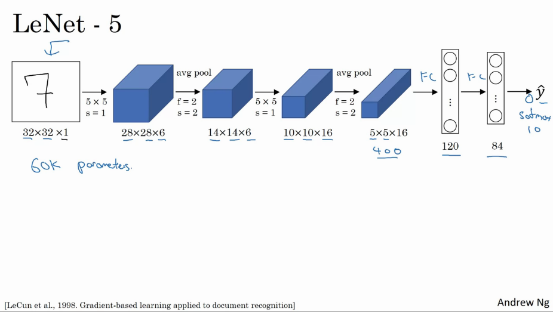
Not unusual to see networks that are 1000 times bigger
width / height goes down, number of channels goes up
conv pool conv pool .... fc fc fc .. output
Extra comments if you want to read LeNet-5
use sigmoid/tanh instead of ReLU
typically every filter looks at every channel, but original LeNet-5 will not do this, it will look at single channels and complex stuff because the network was already "big" back then
original LeNet-5 uses sigmoid nonlinearity after pooling.
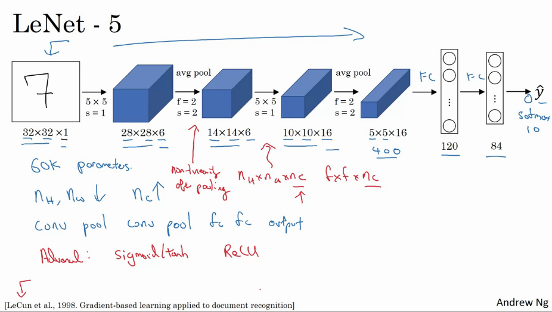
AlexNet
Original paper uses 224x224x3 but its actually 227x227
Uses large stride, so dim shrinks quickly
alot bigger than LeNet-5
8 convs, flatten, 3 fc, softmax
very similar to LeNet-5
60k params (LeNet) vs 60mil params (AlexNet)
uses ReLU activation function
Architecture:
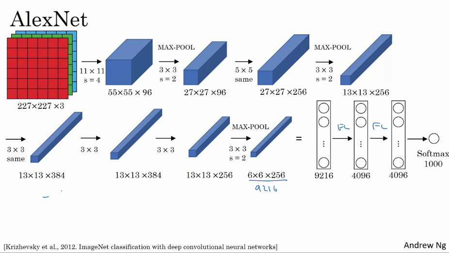
Extra comments if you want to read AlexNet
uses complex training schedule on two GPU's
uses Local Response Normalization
not used much
basic idea: looks at 1 position in H,W and look through all channels and normalize them. Inituition is that for each position in this 13x13 image you dont want too many neurons with very high activation
this doesnt help that much.
no one really uses it
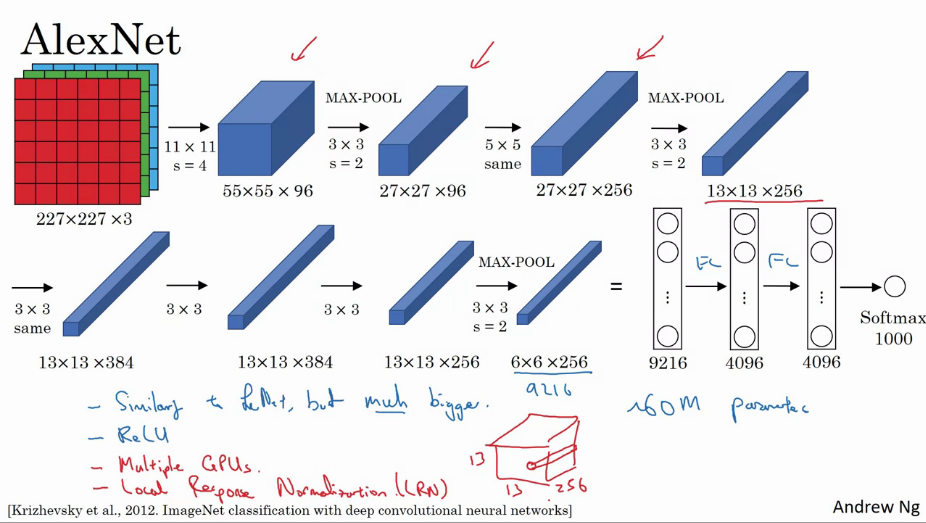
AlexNet was the gamechanger -> 2012.
One of the easier ones to read
VGG-16
instead of having massive amounts of parameters, use smaller network
always use conv 3x3 filters, stride=1 , same padding
maxpool always 2x2, s=2
much deeper network
Essentially, because SAME convolutions and max pooling, the network shrinks very easily readable
output = softmax (1000)
16 in name VGG-16 refers to 16 layers that have weights
138mil params...
number of filters are always doubled 64-128-256-512
relative uniform network
in literature, VGG-19 is a bigger version of VGG-16.
vgg-16 almost does as well
pattern: if you go deeper, H and W go down, but channels increase
now, lets take a[l] and make a "shortcut / skip connection". This makes that the output is
a[l+2]=g(z[l+2]+a[l])
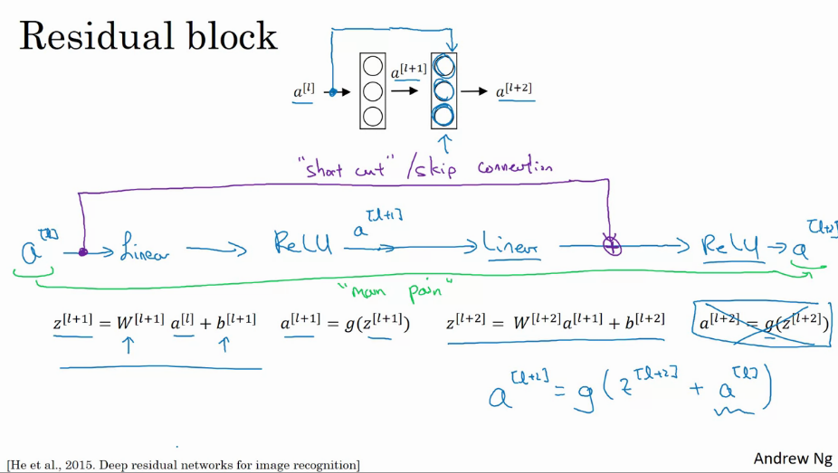
Using Residual Blocks allows to build alot DEEPER networks
Residual "Plain Network"
add all the skip connections to turn each of the blocks into residual blocks
it turns out that if you use GD / ... As you increase the number of layers, the training error decreases but after a while it will go back up.
in theory, having a deeper network should only help, but in reality the error goes back up
helps with vanishing / explodin gradients
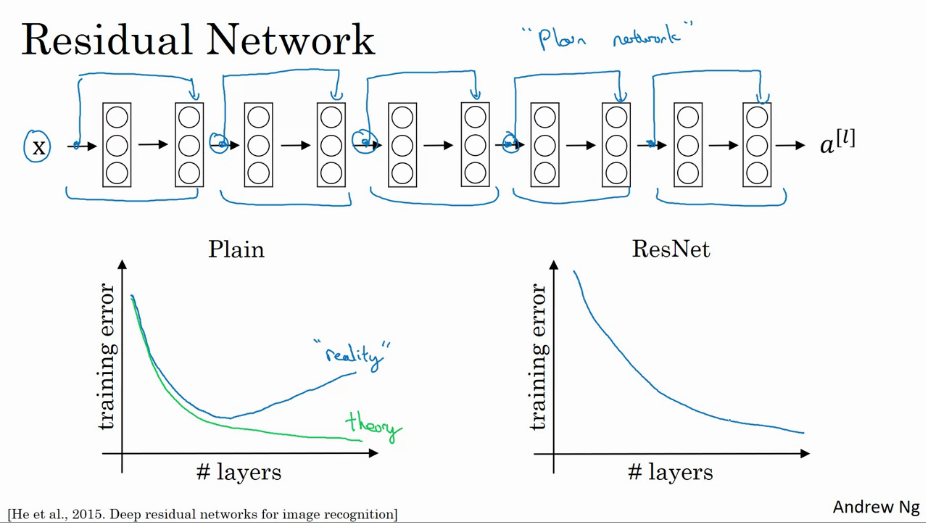
Why ResNets work
making bigger networks hurts the performance of the network
this is not true if you use residual blocks
Lets start the idea with a big NN. A Different net will take the same network, but adds some extra layers in the form of a residual block
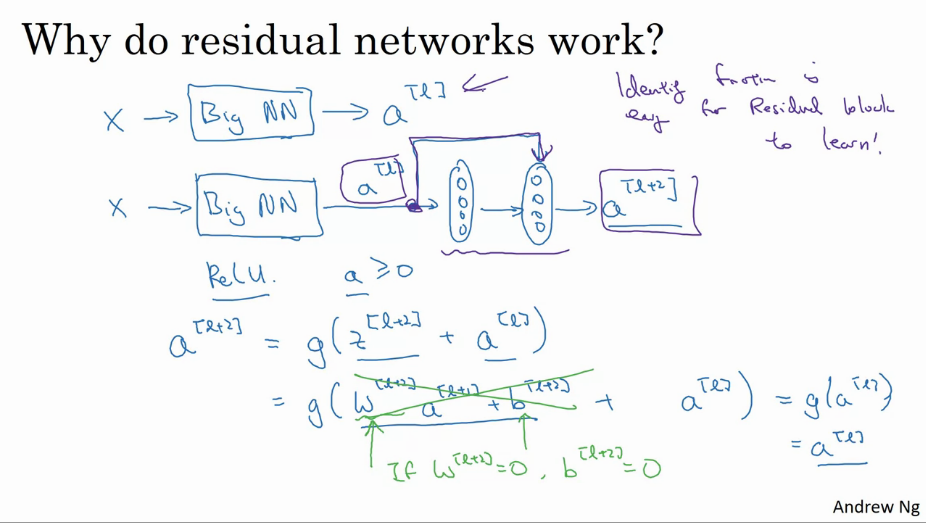
Lets assume we use ReLU, so all activations are always greater than 0
a[l+2]=g(z[l+2]+a[l])=g(w[l+2]a[l+1]+b[l+2]+a[l])
if you apply weight decay or L2 regularization, that will tend to shrink the value of W[l+2] (and b, but not as important). If this happens, the output becomes just equal to a[l].
the identity function is easy for residual blocks to learn because of the skip connection
its difficult for normal networks to learn Identity, thats why larger networks hurt performance
many times with residual blocks it will just help in performance
Some extra notes:
Typically the SAME convolution is used, so the dimensions are also taken care of with the skip connection.
if there is a difference in shape, we can add a new matrix to multiply so that the output becomes Wsa[l] which is fo the same dimension.
This matrix Ws makes that the dimensions don't mismatch.
Can be a matrix with params to be learned
Can be a fixed matrix with zero padding: a_l with zero pads on the sides to make the dimensions work
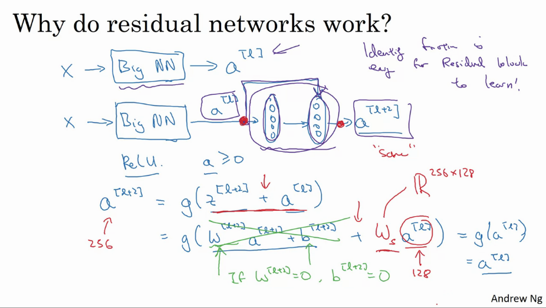
ResNet on images
start from plain network
add skip connections
there's alot of 3x3 same convolutions, thats why we add equal dimension vectors (dimension is preserved)
When there's a pooling layer, you need to make an adjustment to the dimension
The last layer is a fully connected layer that makes a prediction using softmax
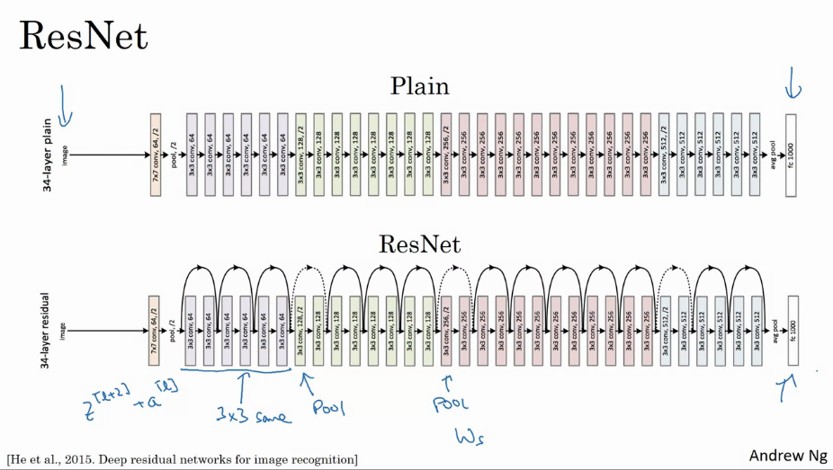
Networks in Networks and 1x1 Convolutions
1x1 conv = multiplication is matmul with scalar
However, in a high dimensional volume (c>1), it makes more sense
look at each of the 32 different positions
takes elementwise product of 32numbers on the left and 32numbers of the filter.
after, it applies a relu
think of it as one neuron that takes as input 32 numbers, multiplying them by 32 weights, applying nonlinearity and outputting
if yuo have multiple convlutions, you have multiple units that take as input the slice and then building them up into a new output block
its basically having a fully connected network that applies to each of the elements, so it takes as input 32 numbers and outputs a number of filters nc[l+1].
can do difficult multiplication
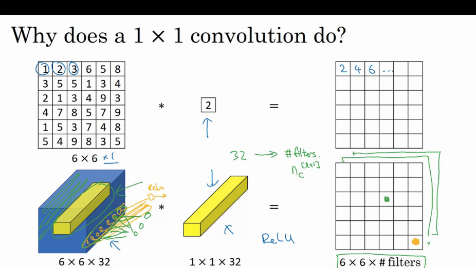
also named "Network in Network" , by lin et al.
An example of where a 1by1 conv is useful
if the number of channels is too big and you want to shrink it (ie go from 128 -> 32 channels)
you can also keep the number of channels constant/decrease/increase
can just use this as an extra nonlinearity
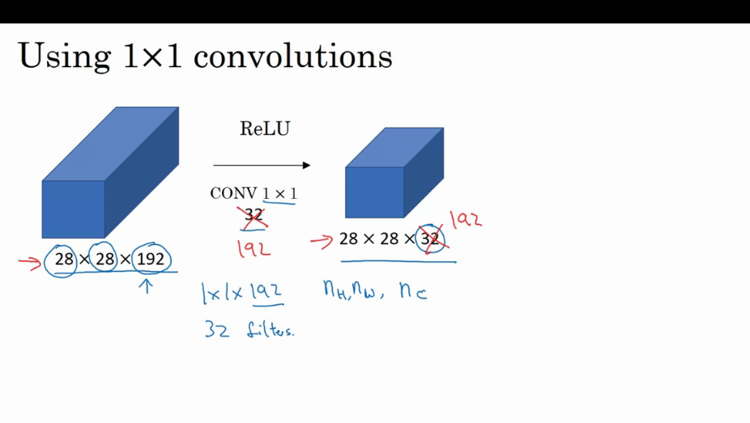
Inception Network
arch is more complex, but works really well
instead of choosing what size of convolution you want, do them all
stack up multiple blocks of convolutions, making the dimensions match up
also include pooling. In order to make the dimensions match, you need to add padding.
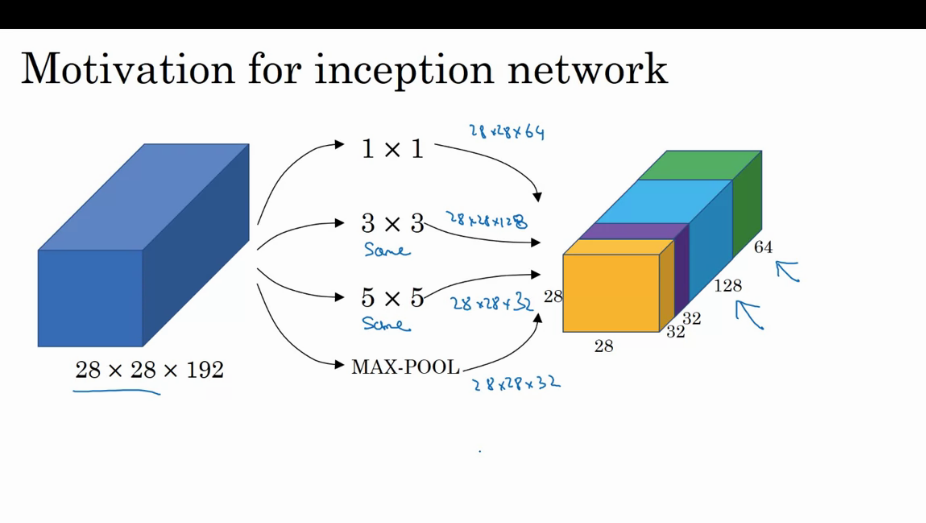
Above is called an inception volume
actually increases the number of channels
You dont need to pick any filter size / ...
Let the network learn what it needs
However, the computational cost is very big. Lets focus on the 5x5 convolution of the above image below.
you have 32 filters
each filter is 5x5x192
output is 28x28x32
this means that we need to calculate 28x28x32 x 5x5x192 = 120million computations for only this block
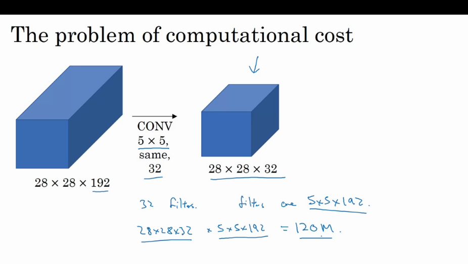
Alternatively, we can use a 1x1 convolution to a 16 channel volume and consequently run the 5x5 convolution to get the final output.
the input / output size is the same
essentially shrink to an intermediate volume called a bottleneck layer
the computational cost is now
First 1x1 conv: 28x28x16 (outputs) * 1x1x192 (multiplications) = 2.4mil
second 5x5 conv: 28x28x32 (outputs) * 5x5x16 = 10.0mil
total amount of multiplications = 12.4mil
the number of additions is about the same as the amount of multiplications
reduction of ~90%!
as long as you implement this bottleneck layer within reason, you can shrink this layer quite significantly without significantly reducing the performance.
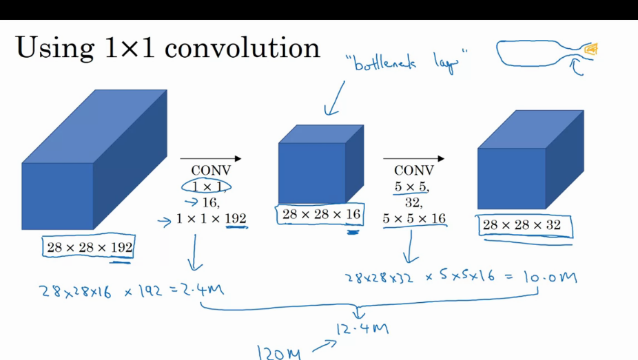
Building an Inception Network
Combine all the blocks
in the pooling layer, remember to use SAME padding for pooling, so that the output height/width can be concatenated with the other outputs. Even after this it will have the same amount of channels! Add one more 1x1 conv layer to shrink the number of channels.
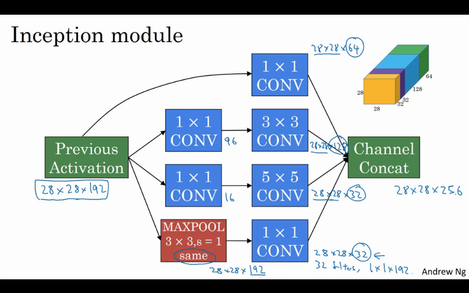
This is one inception module. InceptionNet uses many of these modules
There are some extra max pooling layers to change the height and width of the network.
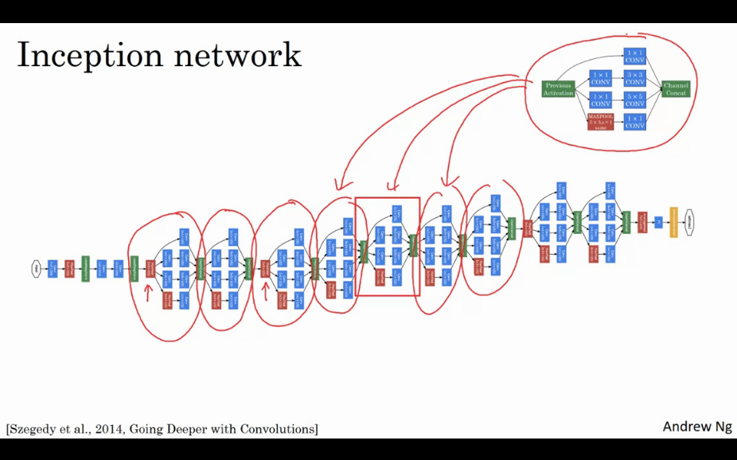
One more detail: there are side branches (green). They take a hidden layer and use that to make a prediction (softmax).
helps to ensure that the computed features in intermediate layers are not too bad
helps preventing overfitting
also goes by the name GoogLeNet :)
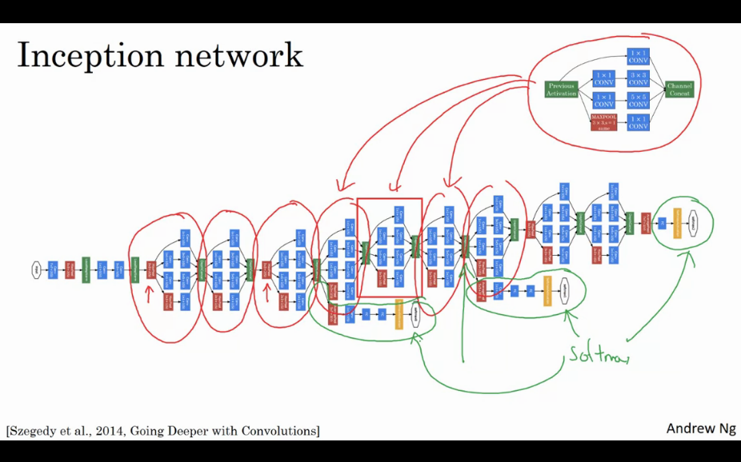
inceptionNet actually refers this meme below, as motivation for the need to build deeper NN
Practical advice for using ConvNets
Using open source implementations
many networks are difficult to replicate
look online for an open source implementation: use authors implementation!
re-implementation could be a good exercise
pick an architecture that you like
look for open source implementation
build from there
sometimes these network take a very long time to train, we can use transfer learning to use stuff from others
often, starting with open source implementations is a faster way to start on a new project.
Transfer learning
sometimes training takes many gpu's and going through the hyperparameter search process also takes long
Example: build pet detector and you want to detect your own cat.
classification problem with 3 classes.
Tigga
Misty
neither
If your training set is small
go online and download an OS implementation + weights trained on for example ImageNet
get rid of the softmax layer (1000 outputs) and create your own softmax unit that outputs either one of the three options (tigga, misty, neither)
freeze all the other layers.
by using other peoples weights you dont need alot of training sample. Use parameters such as trainableParameter=0 or freeze=1
One other trick is that you could precompute the activations of one layer and saving them to disk. This way you can train a shallow softmax model to predict. Now there is no need to precompute the activations whenever you take an epoch / pass through your training set.
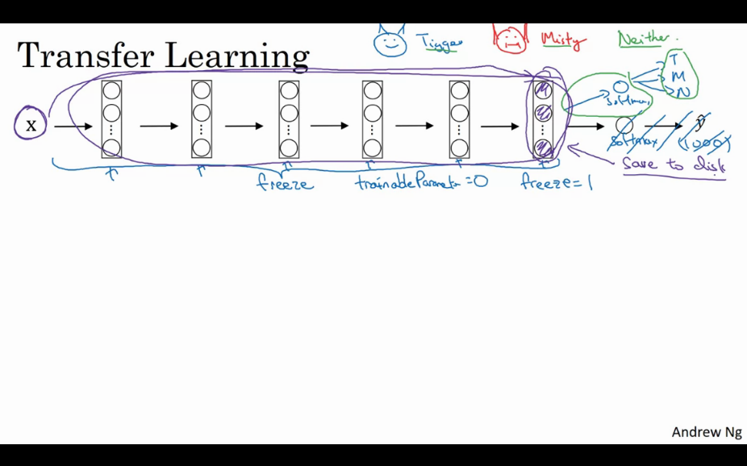
If your training set is medium
If you have a larger labelled dataset
freeze fewer layers and train the later layers.
You can also remove the last layers and add different ones.
essentially, you can lower the amount of layers you freeze, and increase the amount of trainable layers
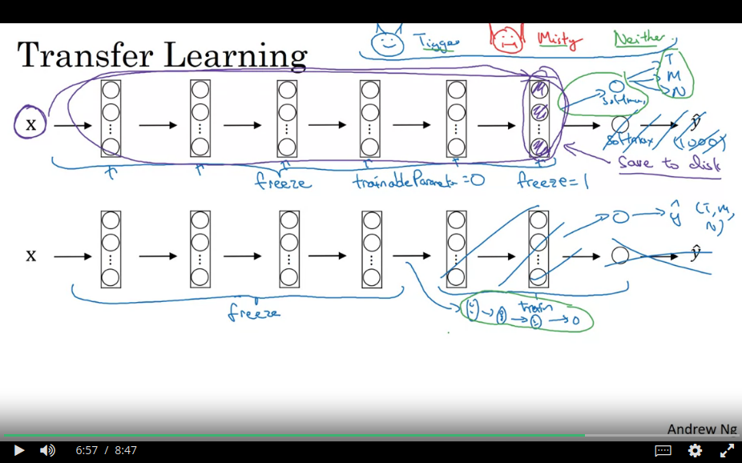
If your training set is large
train the whole network
use the previous weights as initialization (this replaces random initialization)
The more pictures you have the more layers you can train
this is the extreme case
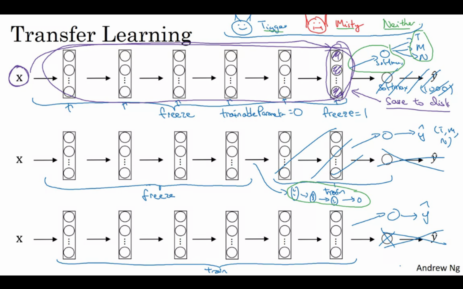
For many applications you are better off downloading other people's weights. You should actually always do transfer learning unless you have an exceptionally large dataset and a very large computational budget
Data Augmentation
for the majority of the cv problems, we just want as much data as possible
that means that data augmentation will often help
Common augmentation methods
Mostly used
mirroring
random cropping (not perfect, but in practice it works well so long as your random crops are reasonably large subset of your original image)
Less used
rotation
shearing
local warping..
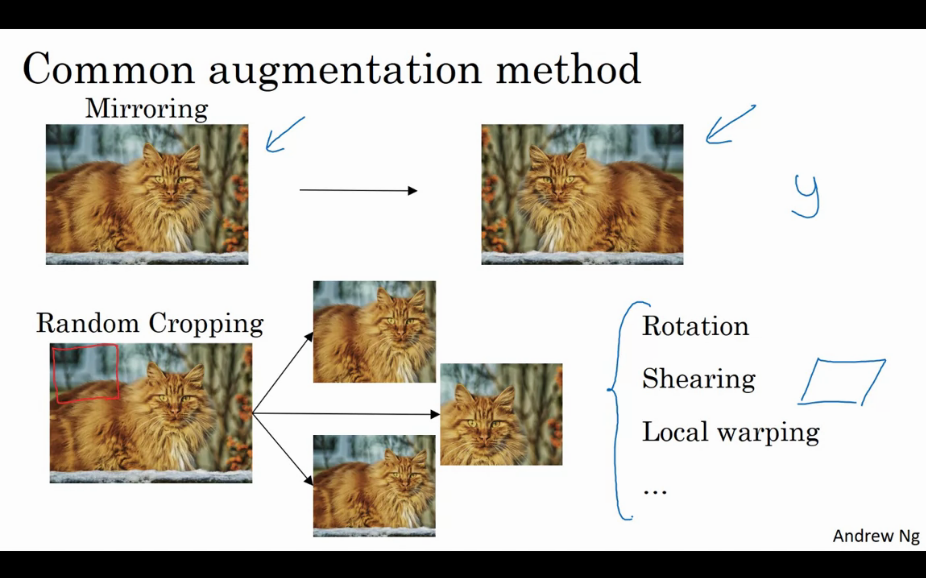
color shifting: make additions / reductions on image channels.
makes new image that is less red/ more green /. ...
in practice, the changing values are drawn from a distribution
changes in color might be possible in the real world, so this makes your algo more robust vs that
there are different ways of sampling RGB
you can do PCA color augmentation
ie. if your image is mainly purple, ie mainly has red and blue tints and very little green, PCA color augmentation will add and subtract alot from red and blue but less from green